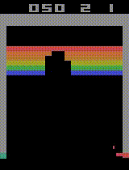

Projects
Real Time Object Detection In The Browser Try Live Demo!
Runs inference in the browser using TensorFlow.js library and web camera images as input. Uses a COCO-SSD model ported for TensorFlow.js. As an encoder it uses a lite version of MobileNetV2 and an SSD network (Single Shot Detector) as the decoder. The model outputs predictions for 90 classes of the COCO dataset and coordinates for the predicted boxes. You can view the code here.
A DQN-Agent Learning Atari BreakOut
A Deep Q Network that implements an approximate q-learning algorithm with experience replay and target networks. Developed on TensorFlow using OpenAI Gym for the Atari environment, as part of the Practical Reinforcement Learning course on Coursera.
DeepMind's Papers: 1, 2, 3 |A CNN (YOLO-V2) Object Detector


A Convolutional Neural Network of YOLO-V2 architecture pretrained on COCO Dataset, performs object detection for 80 classes. Ported in Keras from DarkNet. Developed as part of the deeplearning.ai 's specialization on Deep Learning offered on Coursera.
Yolo Papers: 1, 2 | Repo | CertificateCNN Neural Style Transfer
A convolutional neural network performing style transfer between two images. Implemented with tensorflow, uses a VGG-19 network pretrained on ImageNet Dataset. Developed as part of the deeplearning.ai 's specialization on Deep Learning offered on Coursera.
Paper | Repo | Certificate